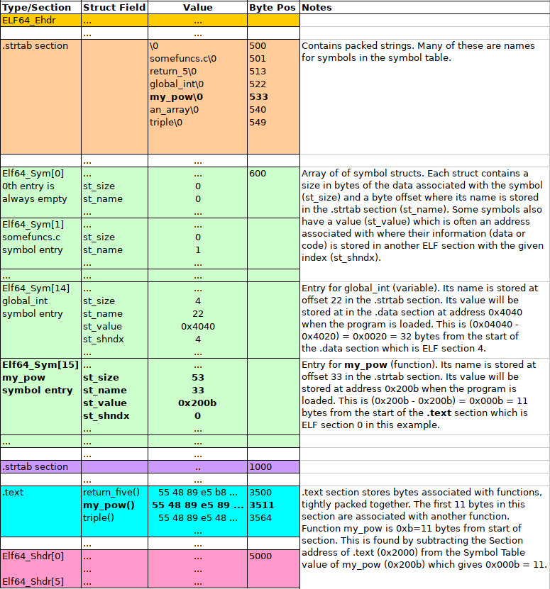

CSCI 2021 Project 5: Binary ELF File Parsing
- Due: 11:59pm Wed 14-Dec-2022
- Approximately 3.0-4.0% of total grade
- Submit to Gradescope (submission now open)
- Projects are individual work: no collaboration with other students is allowed. Seek help from course staff if you get stuck for too long.
CODE DISTRIBUTION: p5-code.zip
VIDEO WALKTHROUGH: https://canvas.umn.edu/courses/333075/pages/p5-walkthrough
CHANGELOG:
- Sun Dec 11 05:14:57 PM CST 2022
- Submission is now open on Gradescope.
- Fri Dec 9 10:14:25 PM CST 2022
- Added second half of walkthrough video. Amended spec and grading criteria: the CALL mode is required functionality that is described in the walkthrough; no EPs are associated with its completion.
Table of Contents
- 1. Overview
- 2. Download Code and Setup
- 3. findfunc: Finding functions in ELF Files
- 3.1. ELF File References
- 3.2. Overall Approach
- 3.3. Setting up the Memory Map
- 3.4. ELF Header and Section Header Array
- 3.5. String Tables, Names, Section Headers
- 3.6. The
.textSection and its Address - 3.7. Symbol Table and
.strtab - 3.8. Checking that a Symbol is a Function
- 3.9. Printing the Opcodes of the Function
- 3.10. Behavior in Error Cases
- 3.11.
findfuncTemplate - 3.12. Calling Functions
- 3.13. Grading Criteria for
findfunc
- 4. Project Submission
1 Overview
This project features a single problem pertaining to the most recent lecture topics, virtual memory and the ELF file format.
findfunc uses mmap() to parse a binary ELF file to locate the
binary opcodes associated with a function in the .text
section. Along the way, information about the ELF file is printed such
as the sections it contains and the contents of its symbol table.
Tools that work with object files like the linker associated with the
GCC and the program loader must perform similar though more involved
tasks involving ELF files. mmap() is very useful for handling binary
files and is demonstrated in a recent lab.
After locating the binary opcodes for a specified function, findfunc
allows a user to do several operations with the function.
- Print out the opcodes in hex format
- Call the function according to a type specification and arguments given on the command line.
2 Download Code and Setup
Download the code pack linked at the top of the page. Unzip this which will create a project folder. Create new files in this folder. Ultimately you will re-zip this folder to submit it.
| File | State | Notes |
|---|---|---|
Makefile |
Provided | Build file to compile all programs |
findfunc.c |
COMPLETE | Template to complete |
test-input/somefuncs.o |
Data | ELF object file for input to findfunc |
test-input/mymain.o |
Data | Several other ELF and non-ELF files provided |
test-results/ |
Testing | Directory created by running the test script, it can be deleted safely |
testy |
Testing | Test running script |
test_findfunc.org |
Testing | Tests associated with findfunc Not yet released |
3 findfunc: Finding functions in ELF Files
The Executable and Linkable (ELF) File Format is the Unix standard for
binary files with runnable code in them. By default, any executable
or .o file produced by Unix compilers such as GCC produce ELF
files as evidenced by the file command.
> gcc -c code.c > file code.o code.o: ELF 64-bit LSB relocatable, x86-64, version 1 (SYSV), not stripped > gcc program.c > file a.out a.out: ELF 64-bit LSB shared object, x86-64, version 1 (SYSV), dynamically linked, interpreter /lib64/ld-linux-x86-64.so.2, for GNU/Linux 3.2.0
This problem explores the file format of ELF in order to print out the
binary bytes associated with functions in the file. ELF files contain
a Symbol Table that listed all publicly visible entities in the
file. These symbols are for Functions and Global variables in a
program. Information on Symbols are stored in the .symtab ELF
section short for "Symbol Table". The standard utility readelf shows
human readable versions of ELF files and the -s option specifically
prints out the symbol table section. Below is a session which shows
the source code for provided program globals then uses readelf to
show the symbol table associated with its compiled version.
> cd test-input/
> file somefuncs.o
somefuncs.o: ELF 64-bit LSB relocatable, x86-64, version 1 (SYSV), with debug_info, not stripped
> cat somefuncs.c
int return_five(){
return 5;
}
int global_int = 2;
int my_pow(int base, int exp){
int pow=1;
for(int i=0; i<exp; i++){
pow *= base;
}
return pow;
}
char an_array[] = "abcde";
void triple(int *xp){
*xp = *xp * 3;
return;
}
int meaning_of_life(){
int l = 21;
l *= 2;
return l;
}
> readelf -s somefuncs.o
Symbol table '.symtab' contains 9 entries:
Num: Value Size Type Bind Vis Ndx Name
0: 0000000000000000 0 NOTYPE LOCAL DEFAULT UND
1: 0000000000000000 0 FILE LOCAL DEFAULT ABS somefuncs.c
2: 0000000000000000 0 SECTION LOCAL DEFAULT 1 .text
3: 0000000000000000 11 FUNC GLOBAL DEFAULT 1 return_five
4: 0000000000000000 4 OBJECT GLOBAL DEFAULT 2 global_int
5: 000000000000000b 53 FUNC GLOBAL DEFAULT 1 my_pow
6: 0000000000000004 6 OBJECT GLOBAL DEFAULT 2 an_array
7: 0000000000000040 29 FUNC GLOBAL DEFAULT 1 triple
8: 000000000000005d 19 FUNC GLOBAL DEFAULT 1 meaning_of_life
>
A number entries in the symbol table are omitted for clarity: only those associated with data in the program are shown.
Note the following about the symbol table.
- Functions are identified with Type
FUNCand have the following attributes:Sizecorresponds to how many bytes the function's binary Opcodes occupyTypeindicates the type of the symbol. Aside fromFUNCthere are alsoOBJECTsymbols which correspond to global variables and some others.Valueis the starting address of the function within the text section
- Global Variables are identified with Type
OBJECTSizecorresponds to how many bytes the global variable occupies.- String arrays have
Sizeequal to their length,intglobals haveSize=4anddoubleglobals haveSize=8 Ndxis the ELF file section in which the global variable's value is stored. In this case, all global variables are in Section 23 which is likely the.datasection where initialized global data is stored.Valueis the (approximate) virtual address of the global variable when a program is loaded into the memory; it relates to the (approximate) virtual address of where the ELF.datasection gets loaded when a program starts running
The goal of the problem is to construct a program called findfunc
which allows one to print out the binary bytes associated with a named
function. Finding this data is a crucial step for linking, loading,
and disassembling code such as what is done via the objdump
utility. A demonstration of findfunc is below which illustrates
several aspects of the findfunc.
- It detects whether the file is a proper ELF file and bails out if not.
- It locates the
.textand.symtabsections of the ELF file and shows information on them. - It searches the symbol table for the function named on the command line.
- It detects if the symbol is actually a function or something else and errors out if not a function.
- If the function is found, it will print out all opcodes associated with the function.
> make findfunc # build findfunc gcc -Wall -Werror -g -Og -o findfunc findfunc.c > ./findfunc # show usage for findfunc usage: ./findfunc <file> <funcname> <mode> [arg ...] # PRINT mode will print bytes of the function > ./findfunc test-input/somefuncs.o return_five print # call findfunc on object file, find function 'return_five' file_bytes at: 0x600000000000 # address where somefuncs.o get's mmap()'d Section Headers Found: # ELF header information - 904 bytes from start of file - 64 bytes per entry - 12 sections - 11 is the secion containing header names Section Header Names in Section 11 - 800 bytes from start of file - 103 total bytes - section name string table is Scanning Section Headers for Relevant Sections # iterating through section headers to find [ 0]: # relevenat sections like .text and .symtab [ 1]: .text [ 2]: .data [ 3]: .bss [ 4]: .comment [ 5]: .note.GNU-stack [ 6]: .note.gnu.property [ 7]: .eh_frame [ 8]: .rela.eh_frame [ 9]: .symtab [10]: .strtab [11]: .shstrtab .symtab located # information on relevant sections - 408 bytes offset from start of file - 216 bytes total size - 24 bytes per entry - 9 number of entries .strtab located - 624 bytes from start of file - 75 total bytes in section .text located - 64 bytes offset from start of file - 0x0 preferred address for .text Scanning Symbol Table for symbol 'return_five' # iterate through symbol table to find function [ 0]: [ 1]: somefuncs.c [ 2]: [ 3]: return_five [ 4]: global_int [ 5]: my_pow [ 6]: an_array [ 7]: triple [ 8]: meaning_of_life Found 'return_five' in symbol table - 11 size - 1 section index - 18 info Calculating location of 'return_five' in .text section # find opcodes from function - 0x0 preferred address of function (st_value) - 0x0 preferred address of .text section - 0 offset in .text of start of function - 0x600000000040 virtual address of .text section - 0x600000000040 virtual address of function MODE: print # on command line, request is to print op codes 11 bytes of function 'return_five' 0000: 55 48 89 e5 b8 05 00 00 # iterate through function printing hex bytes 0008: 00 5d c3 # CALL mode will call the function in the binary > ./findfunc test-input/somefuncs.o return_five call 'int (*)(void)' file_bytes at: 0x600000000000 Section Headers Found: - 904 bytes from start of file # same information printed about locating function ... - 0x600000000040 virtual address of .text section - 0x600000000040 virtual address of function MODE: call # function type specified on command line func_type: int (*)(void) # no arguments, returns an int running function (no arguments) # function is called returned: 5 # return value is shown
3.1 ELF File References
It is recommended to do some reading on the structure of the ELF format as it will assist in coming to grips with this problem. As you encounter parts of the below walk-through of how to find and print the symbol table, refer to the following resources.
- Diagrams shown below provide some information about the basics of what is provided in each portion of the file and how some of the records relate to each other.
- Manual Pages: The manual page on ELF (found online or by typing
man elfin any terminal) gives excellent coverage of the structs and values in the file format. Essentially the entire format is covered here though there may be a few ambiguities. - Wikipedia: A good overview of the file format and has some extensive tables on the structs/values that comprise it.
- Oracle Docs: A somewhat more detailed and hyper-linked version of the manual pages.
Note that we will use the 64-bit ELF format only which means most of
the C types for variables should mention ELF64_xxx in them though
use of 32-bit integers may still apply via uint32_t.
3.2 Overall Approach
ELF files are divided into sections. Our main interest is to identify
the .symtab (Symbol Table) and .text (Executable Code)
sections. This is done in several steps.
- Parse the File Header to identify the positions of the Section Header Array and Section Header String Table
- Search the Section Header Array and associated string table to find
the sections named
.symtabwhich is the symbol table,.strtabwhich contains the string names of the symbol table, and.textwhich contains the binary assembly code. Note the position in the file of these three sections. - Iterate through the Symbol Table section which is an array of
structs. Use the fields present there along with the associated
string names in
.strtabto check each symbol for the symbol of interest. - Once the symbol is found in
.symtab, its value from.symtabis used to compute the offset within the.textsection. This is where the function symbol's opcodes are stored. - Once the function opcodes are located, they can be printed or the function can be called. This behavior is dictated by command line arguments.
Since this is a binary file with a considerable amount of jumping and
casting to structs, it makes sense to use mmap() to map the entire
file into virtual memory. It is a requirement to use mmap() for this
problem. Refer to lecture notes, textbook, and lab materials for
details on how to set up a memory map and clean it up once
finished. In particular Lab 14 uses mmap() to parse binary files in
a way that is directly relevant to the present program.
This general approach is outlined in the provided loadfunc.c
template. The reaming sections discuss tricks and techniques to use
while filling in this template.
3.3 Setting up the Memory Map
Make use of the mmap() function create a memory map for the file
specified on the command line. Keep in mind that you may need to
execute the code in this file so find out the correct options to use
with mmap() to make its contents Readbale AND Executable.
3.4 ELF Header and Section Header Array
The initial bytes in an ELF file always have a fixed structure which
is the ELF64_Ehdr type. Of primary interest are the following
- Identification bytes and types in the field
e_ident[]. These initial bytes identify the file as ELF format or not. If they match the expected values, proceed. If incorrect, consult the later section on Error Conditions on what error message to print. - The Section Header Array byte position in the field
e_shoff. The Section Header Array is like a table of contents for a book giving positions of most other sections in the file. It usually occurs near the end of the file. - The index of the Section Header String Table in field
e_shstrndx. This integer gives an index into the Section Header Array where a string table can be found containing the names of headers.
The following diagram shows the layout of these first few important parts of an ELF file.
Figure 1: ELF File Header with Section Header Array and Section Header String Table.
3.5 String Tables, Names, Section Headers
To keep the sizes of structures fixed while still allowing variable length names for things, all the names that are stored in ELF files are in string tables. You can see one of these laid in the middle purple section of the diagram above starting at byte offset 1000. It is simply a sequence of multiple null-terminated strings laid out adjacent to one another in the file.
When a name is required, a field will give an offset into a specific
string table. For example, each entry of the Section Header Array has
an sh_name field which is an offset into the .shstrtab (the sh
is for "section header").. The offset indicates how far from the start
of the string table to find the require name.
- The
.shstrtabsection begins at byte 1000 so all name positions are1000 + sh_name - The 0th
.textsection hassh_name = 0; the string.text\0appears at position 1000. - The 1th
.symtabsection hassh_name = 6; the string.symtab\0appears at byte position 1006. - The 4th
.datasection hassh_name = 32; the string.bss\0appears at byte position 1032.
The Section Header Array is an array of Elf64_Shdr structs. By
iterating over this array, fishing out the names from .shstrtab, and
examining names using strcmp(), the positions for the two desired
sections, .symtab and .strtab can be obtained via the associated
sh_offset field.
Note that one will need to also determine length of the Section Header
Array from the ELF File Header field e_shnum.
Also, on finding the Symbol Table section, note its size in bytes
from the sh_size field. This will allow you to determine the number
of symbol table entries.
3.6 The .text Section and its Address
In addition to identifying the .symtab and .strtab sections in the
section header, identify and track the location of the .text section
as this is where the opcodes for a function are stored. The .text
section is copied directly into memory when a program is loaded. The
section header struct field sh_addr is the requested location for
some sections to be loaded. Often it is 0x0 for the .text section
but not always. Record the value for sh_addr in your program as it
is used to calculate the location of variable values from the symbol
table.
Once the location of the .text section is located, print out some
data about it in the following format.
.text section - 1 section index - 64 bytes offset from start of file - 0x2000 preferred virtual address for .text
3.7 Symbol Table and .strtab
Similar to the Section Header Array, the Symbol Table is comprised of
an array of Elf64_Sym structs. Each of these structs has a
st_name field giving an offset into the .symtab section where a
symbol's name resides. The following diagram shows this relationship.

Figure 2: ELF Symbol Table, associated String Table, and locations of function symbols in .text section. The entry location of symbol my_pow is bolded along with the location of its name "mypow" and location of its opcodes in the .text section.
Data on the symbol table is printed out in a format given in the template.
findfunc will work with the opcodes of a function described in the
symbol table. To that end, one must iterate through the array of
Symbol Table Elf64_Sym structs searching desired symbol. In the
above diagram, my_pow is of interest and is found midway through the
table at index 15. On finding the requested symbol, print out data
about it in the format shown in the template which roughly corresponds
to fields of the Elf64_Sym struct.
- The
st_sizein this case corresponds to the number of bytes of opcodes associated with the function in the.textsection. - The "value" in the
st_valuefield is the preferred load address for the function though loaders/operating systems often select other addresses for everything in the.textsection. - The section index
st_shndxfield gives the ELF section in which this symbol is stored. In this case, it is section 1 which is the index of the.textsection where opcodes are stored. - The location of
my_pow's opcodes in the.textsection is computed by calculating its address as an offset from the address of the.textsection:.textwill load at0x2000in the output abovemy_powis at address0x200b- The opcodes of
my_powis therefore offset0x200b - 0x2000 = 0xb = 11from the start of the.datasection
- Add 11 to the offset of
.textfrom the beginning of the file (found in earlier when locating the.textsection) to get the address of opcodes formy_pow
If the function symbol that is requested is not found in the symbol table, refer to the Error Conditions section for the appropriate error message to print.
3.8 Checking that a Symbol is a Function
Symbol table entries have a field called st_info which indicates
some properties of the associated symbol such as whether it is an
OBJECT (global variable) or a FUNC function. The field is binary
data and such info must be extracted. A macro is provided to extract
the type.
ELF64_ST_TYPE(somesym->st_info)
will extract type information. If this is equal to STT_FUNC symbol
is a function. If not, then loadfunc should report an error as
indicated in the template.
3.9 Printing the Opcodes of the Function
Treat the address for the function opcodes above as though it were a
char * array though many values will not be in the ASCII
range. These are arbitrary bytes that are best printed in hexadecimal
and we will favor printing them in columns of 8. The final required
output of findfunc looks like the following.
Bytes of function 'my_pow' 0: 55 48 89 e5 89 7d ec 89 8: 75 e8 c7 45 f8 01 00 00 10: 00 c7 45 fc 00 00 00 00 18: eb 0e 8b 45 f8 0f af 45 20: ec 89 45 f8 83 45 fc 01 28: 8b 45 fc 3b 45 e8 7c ea 30: 8b 45 f8 5d c3
- The left column is printed in hexadecimal, 4 characters wide, right
adjusted. Use a format specifier of
%4xfor this. Note: an early version of the spec incorrectly stated to use decimal %d printing; this has been fixed to match the example provided. - Each byte of the opcodes is printed in hexadecimal format with
leading 0s in a space of 2 characters. Use a format specifier of
%02hhxfor this.
3.10 Behavior in Error Cases
The template provides a number situations in which errors should be reported along with associated error messages. These are roughly:
- The file is not an ELF file as it has the wrong "magic bytes" at the beginning.
- There is no Symbol Table present in the file, associated with a "stripped" binary file. It may also be that there is no text or string table section either also leading to an error.
- The function symbol indicated on the command line is not found
- The function symbol is not actually a symbol, it is something else.
Error messages associated with each of these are provided in the template and when they should be printed in terms of program control flow.
3.11 findfunc Template
A basic template for findfunc.c is provided in the code pack which
outlines the structure of the code along with some printing formats to
make the output match examples. Follow this outline closely to make
sure that your code complies with tests when the become available.
3.12 Calling Functions
One interesting aspect of dealing with functions in Binaries is that in some cases they can be run after being located. To arrange for this, several things need to be true.
- The memory into which the function is loaded must be marked with Executable permission.
- The types of the functions must be known (e.g. takes no arguments, returns an integer).
- The functions must either use no global variables/other functions or be patched with addresses for these things.
It is not hard to arrange for the (1) and (2) above while (3) is much trickier.
By passing call on the command line, findfunc executes the
function that is identified. Three examples from the somfuncs.o
sample file are given here.
# runs return_five: takes no arguments and returns an int >> ./findfunc test-input/somefuncs.o return_five call 'int (*)(void)' file_bytes at: 0x600000000000 Section Headers Found: - 904 bytes from start of file - 12 sections total - 0x600000000388 section header virtual address Section Header Names in Section 11 - 800 bytes from start of file - 103 total bytes - 0x600000000320 .shstrtab virtual address Scanning Section Headers for Relevant Sections [ 0]: [ 1]: .text [ 2]: .data [ 3]: .bss [ 4]: .comment [ 5]: .note.GNU-stack [ 6]: .note.gnu.property [ 7]: .eh_frame [ 8]: .rela.eh_frame [ 9]: .symtab [10]: .strtab [11]: .shstrtab .symtab located - 408 bytes from start of file - 216 bytes total size - 24 bytes per entry - 9 number of entries - 0x600000000198 .symtab virtual addres .strtab located - 624 bytes from start of file - 75 total bytes in section - 0x600000000270 .strtab virtual addres .text located - 64 bytes offset from start of file - 0x0 preferred address for .text - 0x600000000040 .text virtual addres Scanning Symbol Table for symbol 'return_five' [ 0]: [ 1]: somefuncs.c [ 2]: [ 3]: return_five [ 4]: global_int [ 5]: my_pow [ 6]: an_array [ 7]: triple [ 8]: meaning_of_life Found 'return_five' in symbol table - 11 size - 1 section index - 18 info Calculating location of 'return_five' in .text section - 0x0 preferred address of function (st_value) - 0x0 preferred address of .text section - 0 offset in .text of start of function - 0x600000000040 virtual address of .text section - 0x600000000040 virtual address of function MODE: call func_type: int (*)(void) running function (no arguments) returned: 5 # run my_pow: takes 2 integers, returns an integer >> ./findfunc test-input/somefuncs.o my_pow call 'int (*)(int,int)' 3 5 file_bytes at: 0x600000000000 Section Headers Found: - 904 bytes from start of file ... Found 'my_pow' in symbol table - 53 size - 1 section index - 18 info Calculating location of 'my_pow' in .text section - 0xb preferred address of function (st_value) - 0x0 preferred address of .text section - 11 offset in .text of start of function - 0x600000000040 virtual address of .text section - 0x60000000004b virtual address of function MODE: call func_type: int (*)(int,int) running function with arguments (3,5) returned: 243 # run triple: takes an integer pointer and returns nothing >> ./findfunc test-input/somefuncs.o triple call 'void (*)(int*)' 6 file_bytes at: 0x600000000000 Section Headers Found: - 904 bytes from start of file ... Found 'triple' in symbol table - 29 size - 1 section index - 18 info Calculating location of 'triple' in .text section - 0x40 preferred address of function (st_value) - 0x0 preferred address of .text section - 64 offset in .text of start of function - 0x600000000040 virtual address of .text section - 0x600000000080 virtual address of function MODE: call func_type: void (*)(int*) running function, arg points to 6 arg is now: 18
Below are some notes on how to complete this portion of the project.
Functions Must Be Executable
In order to execute instructions, they must have the "execute" (x)
permission associated with the memory page on which they are loaded.
This means requires that when you mmap() the file with the function
opcodes in them, you must pass an option to make the mapped memory
executable. Do some research such as through the manual page (man
mmap) or on the internet to find such an option to pass to mmap().
Types of functions Supported
There are 3 types of functions that are supported. These are indicated
on the command line via an option along some additional arguments to
the findfunc.
int (*)(void): the funciton found takes no arguments and returns an integer. Call the function and print out its return value produce following output with X substituted for the return value.int (*)(int,int): the function found takes two integers and returns an integer. In this case 2 additional integer arguments are provided on the command line. Call the function with the 2 arguments and print its return value. Produce the following output with X,Y as the arguments provided on the command line and Z the return value of the function.void (*)(int*): the function takes a pointer to an integer and returns nothing but changes the integer pointed to. In this case 1 additional integer argument is provided on the command line. An integer is set to this argument and its address is passed to the function. Print the following outpu with X substituted for the initial value for the argument and Y its value after calling the function.
Casting to Functions
Printing out the opcodes as bytes is relatively easy: one calculates a pointer to its location and iterates over the bytes as an array. In contrast, if that location is to treated as a Function instead, then some tricky casting is required.
The command line parameters that indicate the types supported correspond to the casting that is required to make this work. In the template, the first case is provided and can serve as a reference for the other types.
3.13 Grading Criteria for findfunc grading
Both binary and shell tests can be run with make test
| Weight | Criteria |
|---|---|
| Automated Tests | |
| 20 | Passing automated tests run via make test, tests in test_findfunc.org |
| Manual Inspection | |
| 5 | Sets a pointer to the ELF File Header properly |
Checks identifying bytes for sequence {0x7f,'E','L','F'} |
|
| Properly extracts the Section Header Array offset, length, string table index | |
| 5 | Sets up pointers to Section Header Array and associate Section Header String Table |
Loops over Section Header Array for sections named .symtab / .strtab / .text |
|
| Properly uses SH String Table to look at names of each section while searching | |
Extracts offsets and sizes of .symtab / .strtab / .text sections, location of the address for .text |
|
| 5 | Iterates over the symbol table to locate the named function symbol |
| Clear cases for finding the requested symbol or failure to find symbol in the table | |
Calculation done to find the position of a symbol value in the .text section |
|
| 5 | Completes the PRINT mode |
| Properly iterates over opcodes associated with a function | |
| Printing done using specified formats | |
| 5 | Completes the function the CALL mode |
| Castes each type o functions properly | |
| Processes command line arguments and passes them correctly to function calls | |
| 5 | Clean, readable code |
| Good indentation | |
| Good selection of variable names | |
| 50 | Problem Total |
4 Project Submission
4.1 Submit to Gradescope
In a terminal, change to your project code directory and type make zip which will create a zip file of your code. A session should look like this:
> cd Desktop/2021/p5-code # location of project code > ls Makefile findfunc.c test-input/ ... > make zip # create a zip file using Makefile target rm -f p5-code.zip cd .. && zip "p5-code/p5-code.zip" -r "p5-code" adding: p5-code/ (stored 0%) adding: p5-code/findfunc.c (deflated 72%) adding: p5-code/Makefile (deflated 59%) ... Zip created in p5-code.zip > ls p5-code.zip p5-code.zip- Log into Gradescope and locate and click Project 5' which will open up submission
- Click on the 'Drag and Drop' text which will open a file selection
dialog; locate and choose your
p5-code.zipfile - This will show the contents of the Zip file and should include your C source files along with testing files and directories.
- Click 'Upload' which will show progress uploading files. It may take a few seconds before this dialog closes to indicate that the upload is successful. Note: there is a limit of 256 files per upload; normal submissions are not likely to have problems with this but you may want to make sure that nothing has gone wrong such as infinite loops creating many files or incredibly large files.
- Once files have successfully uploaded, the Autograder will begin
running the command line tests and recording results. These are
the same tests that are run via
make test. - When the tests have completed, results will be displayed summarizing scores along with output for each batch of tests.
- Refer to the Submission instructions for P1 for details and pictures.
4.2 Late Policies
You may wish to review the policy on late project submission which will cost you late tokens to submit late or credit if you run out of tokens. No projects will be accepted more than 48 hours after the deadline.